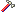

Use this pane to view a list of the customizable menus in the selected ObjectServer, and to customize these menus for the Tivoli Netcool/OMNIbus desktop (event list and Conductor).
You can add items to these menus, or remove items from them, but you cannot delete the menus. Menu items are made up of tools, separators and submenus.
| Icon | Description |
|---|---|
 |
This icon represents a menu. |
|  | This icon represents a tool. |
| This icon represents a submenu. | |
| This icon represents a separator. |
Within an expanded menu structure, tool names are shown in the format: Title (Tool name), where Title represents the tool name as it will appear in the event list or Conductor menu, and Tool name is the name defined for the tool during its creation. Tool and submenu titles may also include the ampersand (&) character. An ampersand to the left of a character identities that character as the mnemonic (or shortcut key) for the item in the event list or Conductor menu. For example, &Acknowledge allows a user to press A instead of using the mouse to select the item.